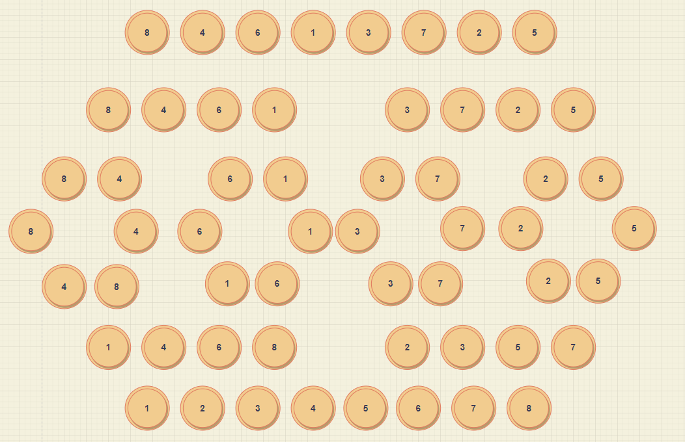

병합정렬
분할 정복이라는 알고리즘 디자인 기법에 의거하여 만들어진 정렬 방법이다. 계속해서 분할을 한후 다시 결합하는 과정을 가지면서 숫자를 정렬한다.
그림으로 표현하면 다음과 같다.

자 다음 개념을 이용하여 병합 정렬을 구현해보도록 하겠다.
1
2
3
4
5
6
7
8
9
10
11
12
13
14
15
16
17
18
19
20
21
22
23
24
25
26
27
28
29
30
31
32
33
34
35
36
37
38
39
40
41
42
43
44
45
46
47
48
49
50
51
52
53
54
55
56
57
58
59
60
61
62
63
64
65
#include <stdio.h>
#include <stdlib.h>
void mergeSort(int arr[], int left, int mid, int right) {
int l = left;
int r = mid + 1;
int index = l;
int* temp = (int*)malloc(sizeof(int) * (right + 1));
while (l <= mid || r <= right) {
if (arr[l] < arr[r] && ( l <=mid && r <= right)) {
temp[index++] = arr[l++];
continue;
}
if (arr[l] > arr[r] && (l <= mid && r <= right)) {
temp[index++] = arr[r++];
continue;
}
if (l > mid) {
temp[index++] = arr[r++];
}
else {
temp[index++] = arr[l++];
}
}
for (int i = left; i <= right; i++) {
arr[i] = temp[i];
}
free(temp);
}
void divideSort(int arr[], int left, int right) {
int mid = 0;
if (left < right) {
mid = (left + right) / 2;
divideSort(arr, left, mid);
divideSort(arr, mid + 1, right);
mergeSort(arr, left, mid, right);
}
return;
}
int main(void) {
int arr[] = {10,5,7,9,2,6,1,8,4,3 };
divideSort(arr, 0, 9);
for (int i = 0; i < 10; i++) {
printf("%d \n", arr[i]);
}
return 0;
}
이상 병합 정렬 이었습니다.